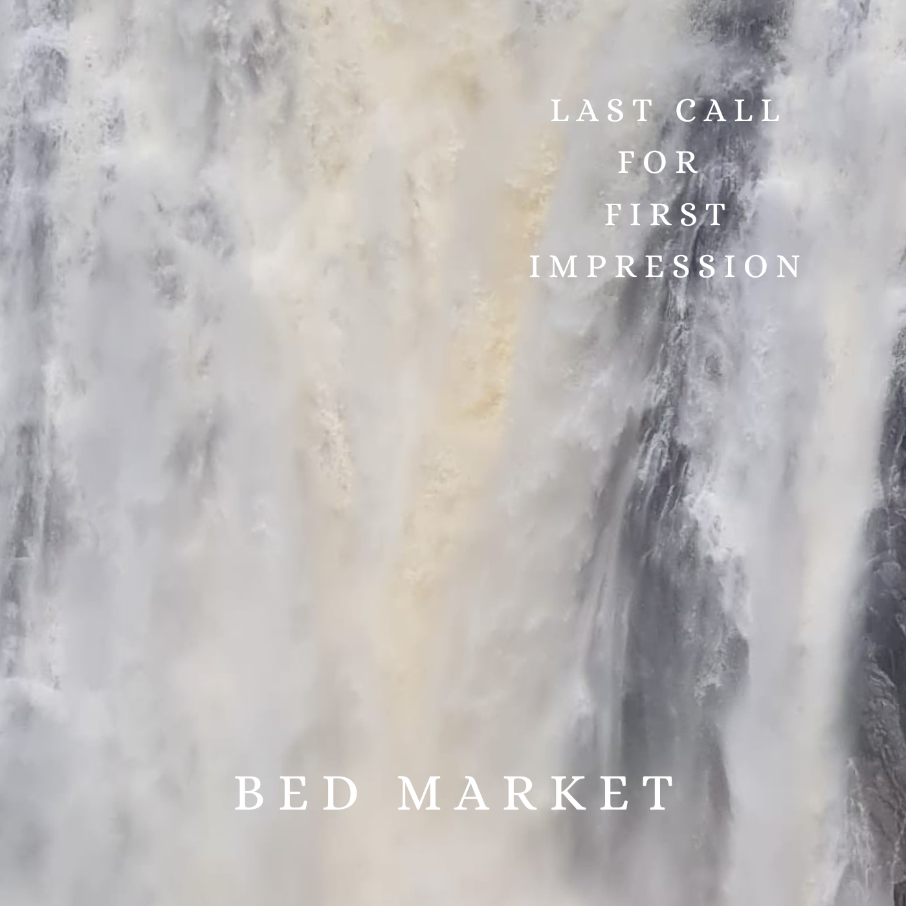
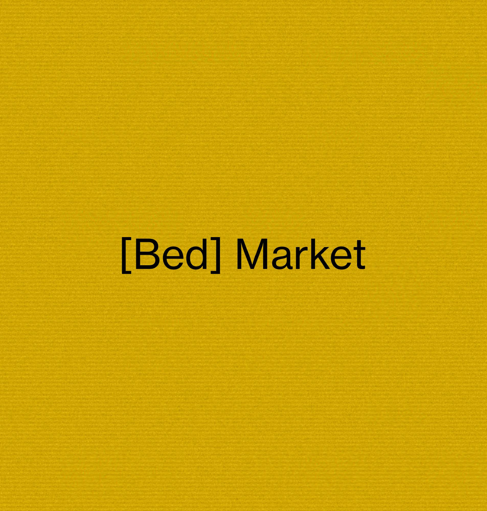

AlbumLast Call for First Impression

Bed Market · 2025 · 9 tracks, 34 min 40 s| # | Title | |
|---|---|---|
| 1 |
Intro (I. I’m afraid) Bed Market |
0:49 |
| 2 |
Change Bed Market |
3:46 |
| 3 |
Isolation Cake Bed Market |
2:58 |
| 4 |
Keep Falling Bed Market |
2:35 |
| 5 |
Interlude (II. Farewell) Bed Market |
1:36 |
| 6 |
Velvet Sky Bed Market |
4:50 |
| 7 |
Sweet Memories Bed Market |
4:12 |
| 8 |
Shortcut Bed Market |
3:36 |
| 9 |
Blown Away (III. - VII.) Bed Market |
10:06 |
Song
Artist